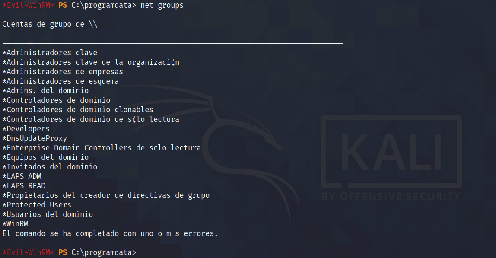

May 24, 2022
Retrieve LAPS (Local Administrator Password Solution) Credentials
In this tutorial, we will see how to retrieve the LAPS (Local Administrator Password Solution) password from the system. We will start by adding a user to the LAPS group. And once the user is part of the LAPS group, we will see how to retrieve the LAPS password and login to the target as administrator.
It shows all the available groups in the system. Note the two LAPS related groups.
The presence of the "AdmPwd.dll" is a good indication that LAPS is being used.
Let's copy PowerView.ps1 to the target using scp.
It shows that the PowerView.ps1 script has been successfully copied to the target.
Let's import this PowerShell module. Once imported, we can reset "gibdeon's" password using the Set-DomainUserPassword cmdlet from PowerView.ps1. I am doing this because I don't have "gibdeon's" password and this user alone can add other users to the "LAPS" related groups.
It creates an authentication object with the "gibdeon" user and the newly modified password.

Since this user has the privileges of creating a new user, we can create a new user account.
Running net users shows that the new user account has been created successfully.
Let's add this newly created account to the "WinRM", "SSH" and "LAPS READ" groups.
Since we have added this user to the "SSH" group, it possible to SSH into this box.
The Get-ADComputer cmdlet allows us to retrieve the password. It is possible because the user is part of the "LAPS READ" group.
Now that we have the password, we can log in to the box using the administrador (or administrator) account.
As a side note, I have enabled port forwarding using SSH which takes all the traffic on port 5985 on the local box and sends it to port 5985 on the target box.
It shows that the local box listening on port 5985.
If you liked reading this article, you can follow me on Twitter: mujtabareads.
- MSSQL Proxy
- Retrieve GMSA (Group Managed Service Accounts) Password
- Capture and Crack MariaDB/MySQL Hashes
- MariaDB/MySQL Exploit Version 10.3.25 (CVE-2021-27928)
- Dirty Pipe Exploit - Example 02
- Dirty Pipe Exploit - Example 01
- Ricoh Printer Driver Privilege Escalation
- Capture Hashes with SCF File
- Privilege Escalation via Server Operators Group
- Exploit PrintNightmare